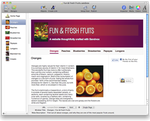
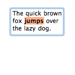
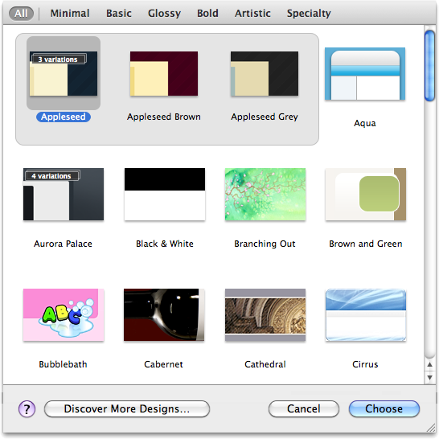
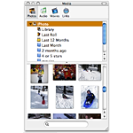
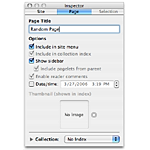
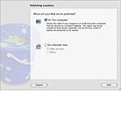

Discover Sandvox
Sandvox makes website creation elegant, intuitive and fun. It’s the Macintosh way — the way it should be: drag and drop content, watch your site take shape as you create it, and publish. Sandvox makes it easy to keep in touch via the Web with friends, family and customers.
To quickly find answers to specific questions, type a word or phrase in the field above and press Return. Click the links below to browse Sandvox topics.
Manage your Document |
|
|  |
Create a document from Sandvox that holds all of your text, graphics, and multimedia for a single website. You maintain your pages using the site outline on the left of the window, and see a live view of your selected page. |
Directly Edit Your Text |
|
|  |
Directly edit your page’s text without the need of a “preview” mode. You see your text immediately in the Web View, as it will appear in a browser. |
Choose From Many Designs |
|
|  |
Choose from fifty page designs, which control the layout, background graphics, and overall “look” of your website. |
Build Pages, Pagelets, and Collections |
|
|
A website is made up of one or more web pages, holding text and media. On the sidebar of your pages you can put pagelets, small areas of content. Groups of pages are called collections, e.g. photo albums or weblogs. |
|
Import Your Content with Drag and Drop |
|
|  |
Use Sandvox’s built-in media browser to drag content directly into your website. Or just drag files in from the Finder. |
Set the Details with the Inspector |
|
|  |
Adjust particular settings for your entire website, the selected page, or selected items on your page using the inspector window |
Publish Your Site on the Web |
|
|  |
Before you publish your site, use the Host Setup Assistant to walk you through the steps you need to specify and verify the host for your website, where you can publish via FTP, SFTP, or WebDAV. |